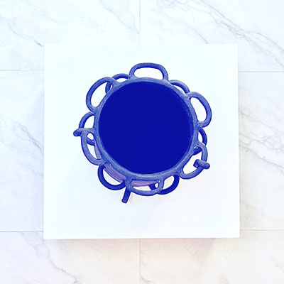

First mother is a temporary space
A solo exhibition by Bárbara Prada
A new collection of abstract paintings, ceramic pieces inspired by the sea, fertility & matriarchies.
-
The vernissage - 7th December 2023, 18h00 until 20h00.
The finissage - 20th December, 18h00 until 20h00
Monday-Saturday 11h00-18h00
Hectolitre (Trait D'Union space)
-
Rue de l'Hectolitre 3,
1000 Bruxelles
-
On Thursday, December 7th, Barbara will present Is a new collection of abstract paintings and ceramic pieces inspired by the ancient matriarchal community discovered in Caral,
Peru in the same area where the artist was raised until the age of 5 by her grandmother.
Caral’s governance structure mostly involved women and was based on consensus rather than hierarchy.
The emphasis on cooperation and collective decision making reflected a peaceful civilisation, evidenced by a lack of warfare or defensive structures.
Located in a desert coastal region, water was a rare but precious source of life and fertility yet through an refined network of irrigation channels,
the people of Caral created abundance. While Caral was a preceramic society, in recent excavations archaeologists discovered five mud statuettes which are
thought to have been important political figures, four of which were women.
In her paintings, the artist incorporates water in a controlled manner throughout the canvas, creating colorful fusions which evoke both the collaborative nature
of Caral society and their innovative management of water. The use of water is also inspired by the matriarchs in her own family, & evokes the primal connection
between the lifegiving qualities of water and the nurturing aspects of motherhood.
The circular form of the sculptures plays between strenght and fragility contrasting with the expression of the paintings, while the artist has adopted an earthier palette,
with nocturnal tones and shell textures. In this way, she reflects on the selflessness of motherhood, their strenght and the cyclicality of the natural world.
Bárbara Prada (b.1990, Perú.) Visual artist Born in Lima, raised in cadaqués, residing and working in Brussels.
Born during times of terrorism in a country of munificent tradition, coloured with vibrant flavours and a religious collectivity, called Perú.
At the age of five I was forced to leave to Europe, losing my home but realizing a dream. This brutal relationship between Eu- rope and Perú,
two contrasting cultures, forced me to find my place as an artist in my current socio-political context.
My artistic journey has been marked by the exploration of various mediums, including painting, sculpture, and installation art.
Beyond my artistic practice, I have the com- mitment to use organic materials and art as my communication tool and as a means for social change.
I has actively participated in social practices based around the familly pot, projects and initiatives that aim to promote cultural diversity,
inclusivity, and social empowerment.
Much of my work to date has explored our relationship to acts of bringing food to the table, into our surrounding neighbourhoods in order to gather
around the comforting rituals of food, which define our social ecology and our identity.
Viewers are invited, to reflect on the strenght, selflessness of motherhood and their nurturing qualities associated with warm water.
-
-
https://barbara-prada.com/